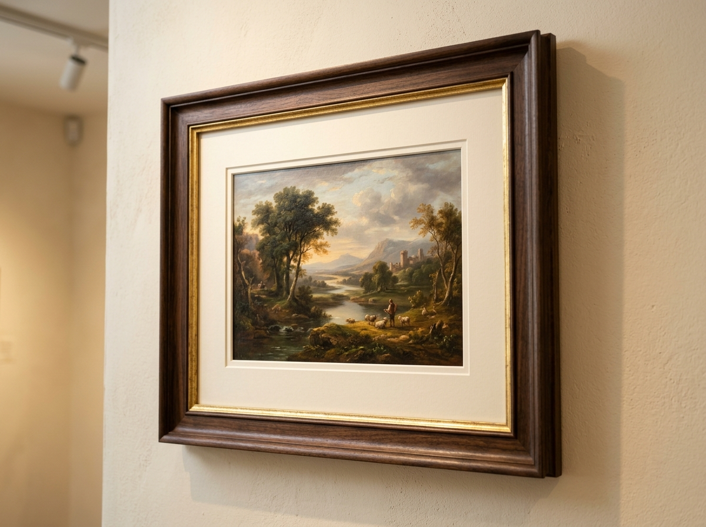
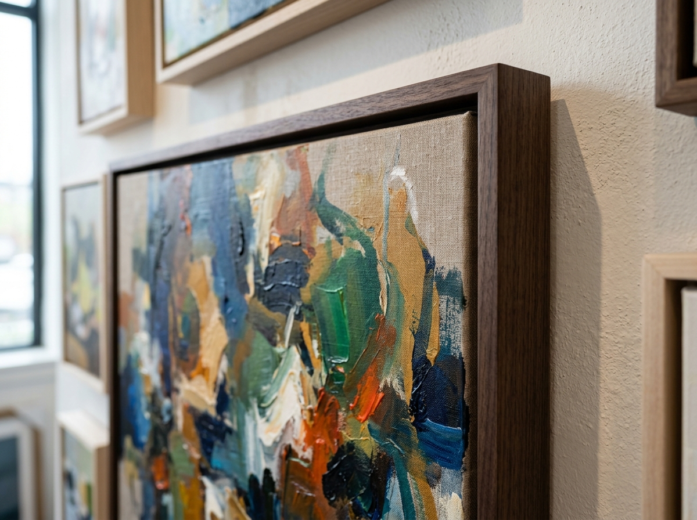
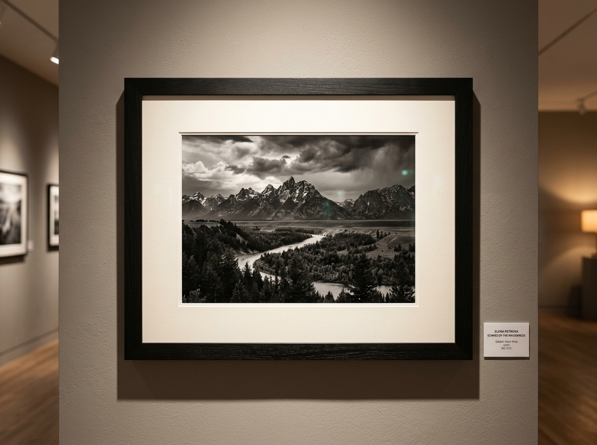
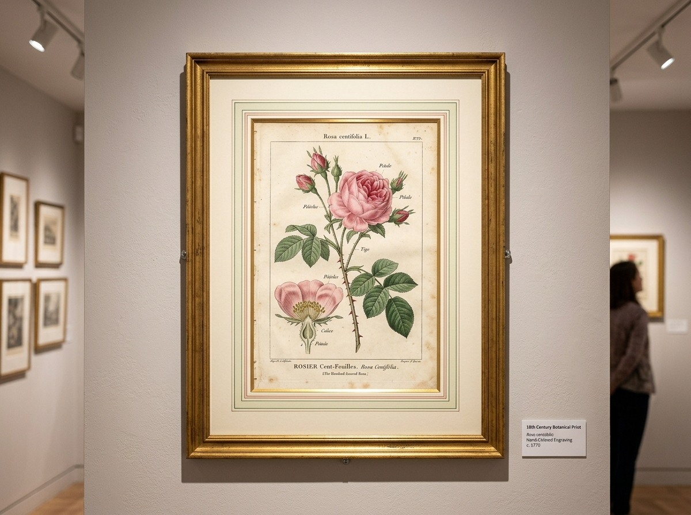
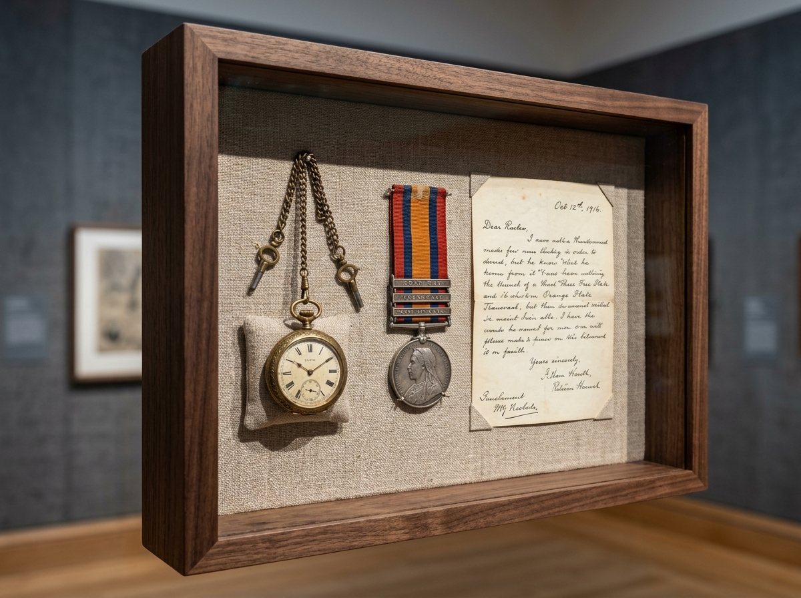
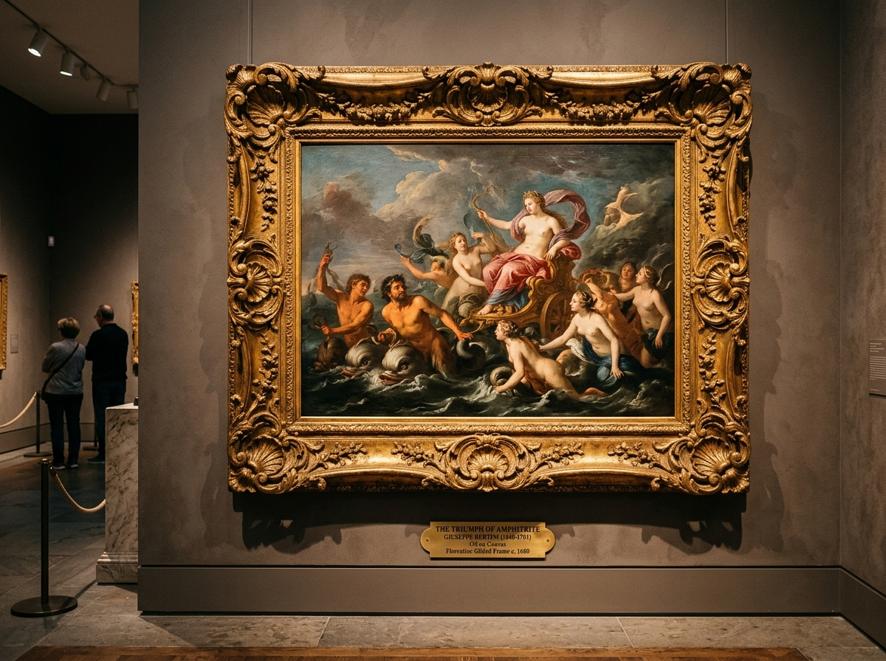
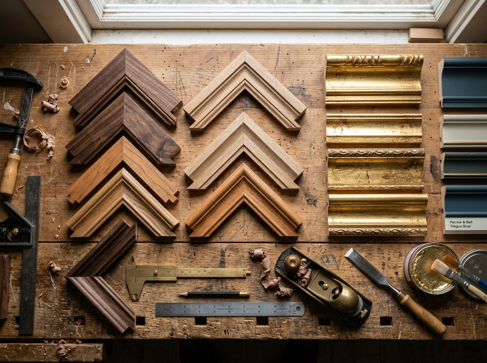
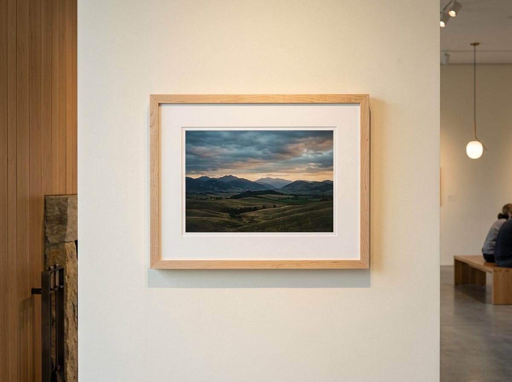
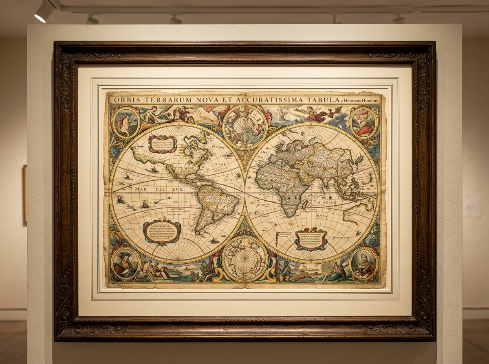

The Art of the Frame: Completed Projects
Explore a curated gallery of our recent commissions. Click on any work to open the high-resolution lightbox, inspect framing joinery, and review archival preservation specifications.









Contemporary Framing & Modern Profiles
Clean architectural lines designed to integrate seamlessly into modern residential interiors, corporate headquarters, and contemporary white-cube galleries.
Subtle Restraint & Precision Shadowlines
Contemporary art demands frames that do not compete with vibrant palettes or oversized compositions. We specialize in narrow 1/2" hardwood profiles with deep 2" side reveals that give substantial structural depth without visual clutter.
- ✔ Rift-Sawn Hard Maple: Minimalist blonde timber with subtle linear grain and satin wax finish.
- ✔ Seamless Corner Splines: Precision internal joinery with zero visible mechanical fasteners.
- ✔ Full-Bleed Spacers: Invisible museum spacers that elevate the glazing 1/4" above the un-matted print edge.
Traditional & Ornate Heritage Frames
Centuries of European artistic heritage reflected in hand-laid gold leaf, rich compo ornamentation, and hand-rubbed patinas.
Cassetta Profiles
Wide flat friezes bounded by raised inner and outer astragal moldings. Ideal for classical oil portraits, landscapes, and Old Master drawings.
Louis XIV & XV Swept Frames
Elaborate pierced acanthus leaf corners and center cartouches carved from seasoned wood and burnished with 22k genuine European gold leaf.
Fluted Scoop Mouldings
Deep cove profiles with beaded inner sight edges, providing extraordinary optical depth that draws the viewer’s eye inward into the painting.
The Engineering Behind Floater Frames
How our custom floater frame engineering cradles gallery-wrapped canvases without putting stress on delicate stretcher joints.
Why Gallery Floaters Are Essential
Traditional lip-style frames conceal up to 1/2" of the painting along all four edges—often hiding artist signatures and brush details. Our floater frames anchor to the back of the stretcher frame with brass stepped brackets, giving the canvas 100% border visibility.
Zero clamping pressure on delicate impasto and acrylic edges.
Calibrated air gap creating the illusion of weightless suspension.
Artist signatures, wrapped canvas edges, and dates remain visible.
Solid American Walnut cradling tailored for heavy gallery stretchers.